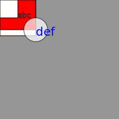

k1lib.p5 module
A quick and dirty tiny module emulating the p5js environment. I made this because I have used Processing extensively in the past, and would like a simple interface to draw stuff. Processing doesn’t really exist on Python (yes, I know of Processing’s python mode, but it’s Jython, not pure python!), so I made this based upon the drawSvg library. Download that before using this module. Example:
from k1lib.imports import *
p5.newSketch(200, 200); background(150)
p5.rect(0, 0, 60, 60)
with p5.context(): # all style changes here will be reverted on exiting the context
p5.fill(255, 0, 0)
p5.rect(0, 0, 60, 50)
p5.rect(0, 0, 30, 30)
p5.fill(255, 180); p5.ellipse(60, 50, 20)
p5.textSize(12); p5.text("abc", 30, 30)
with p5.context():
p5.fill(0, 0, 255); p5.noStroke(); p5.textSize(20)
p5.text("def", 60, 60)
p5.img() # get PIL image
Result:
- k1lib.p5.color(r, g=None, b=None, alpha=255)[source]
Get hex representation of a color. Example:
p5.color(255, 0, 0) # returns "#ff0000ff", red p5.color(255, 0, 0, 100) # returns "#ff000064", transparent red p5.color(255, 100) # returns "#ffffff64", transparent white